교통기사 (2021-05-15 기출문제)
1과목: 교통계획
1. 도로투자사업의 경제성 평가 과정에서 고려되는 도로사용자 측면의 편익과 가장 거리가 먼 것은?
- 통행비용의 절감
- 통행시간의 절약
- 통행료 수입 증대
- 운전 피로도 감소
(정답률: 75%)

2. 경제성 분석에 사용되는 순현재가치(NPV)가 어떤 조건일 때 사업의 수익성이 있다고 판단할 수 있는가?
- NPV |=1
- NPV ＜ 0
- NPV = 0
- NPV ＞ 0
(정답률: 74%)
3. 일반적으로 교통기관의 서비스 수준에 가장 둔감한 통행 목적은?
- 개인통행
- 통근통행
- 쇼핑통행
- 여가통행
(정답률: 54%)
4. 장래에 발생하는 비용과 편익을 인플레이션을 고려하여 현재가치로 환산하기 위한 자본의 이자율을 의미하는 것은?
- 할인율
- 비용/편익비
- 내부수익률
- 초기년도수익률
(정답률: 60%)
5. 교통존 설정에 관한 설명으로 틀린 것은?
- 행정구역과 가급적 일치시킨다.
- 간선도로는 가급적 존 경계선과 일치시킨다.
- 각 존은 가급적 다양한 토지이용이 포함되게 한다.
- 존의 크기를 크게 하면 조사의 정밀도는 저하되지만 조사비용과 분석시간을 줄일 수 있다.
(정답률: 74%)
6. 대중교통수단에 관한 설명으로 틀린 것은?
- 지하철은 대량성 면에서 우수하다.
- 지하철은 버스와의 연계에 따른 불편이 있을 수 있다.
- 버스는 건설비가 많이 소요되나 정시성이 우수하다.
- 버스는 수요에 대처하기 쉬운 반면, 교통혼잡을 일으키는 단점이 있다.
(정답률: 81%)
7. 두 결절점을 연결하는 두 구간(link) a와 b의 교통망 균형노선 배정체계다. Ca(x), Cb(x)는 구간 a와 b의 평균 통행비용 함수이고, ma, mb(x)는 한계 통행비용 함수일 때, 이용자 최적 노선 배정 시 두 구간 a와 b의 균형 통행량(Xa“, Xb”)은? (단, ta와 tb는 구간별 통행비용이며, Xa와 Xb는 각 구간의 통행량이다.)
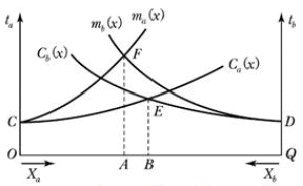
- Xa“=OA, Xb”=QA
- Xa“=OB, Xb”=QB
- Xa“=OA, Xb”=QB
- Xa“=OB, Xb”=QA
(정답률: 57%)
8. 대중교통 요금 구조 중 통행거리에 관계없이 동일한 (기본)요금만 지불하는 것으로, 장거리 승객을 위하여 단거리 승객이 추가로 비용을 부담하는 특성이 있는 것은?
- 거리요금제
- 구간요금제
- 균일요금제
- 시간비례제
(정답률: 77%)
9. 단기교통계획과 비교하여 장기교통계획이 갖는 특징이 아닌 것은?
- 소수의 대안
- 서비스 지향적
- 자본집약적 사업 추진
- 교통 수요가 비교적 고정
(정답률: 70%)
10. 교통수요관리(TDM) 기법 중 교통수단의 전환을 유도하는 정책과 가장 거리가 먼 것은?
- 버스전용차로제
- 자전거 전용도로 확보
- 교통유발부담금 제도 강화
- 교통방송을 통한 통행노선의 전환
(정답률: 68%)
11. 통행발생(Trip Generation) 단계에서 사용하는 분석 모형에 해당하지 않는 것은?
- 카테고리분석법
- 디트로이트법
- 회귀분석법
- 원단위법
(정답률: 67%)
12. 기준년도 OD 통행량과 목표연도의 교차통행량이 아래와 같을 때, 초기과정(k=0)에서 구한 존 별 유출량과 유입량의 성장인자를 이용하여 산출한 1차 반복과정(k=0)의 평균성장 인자값이 틀린 것은?
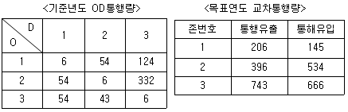
- E11:1.20
- E21:1.14
- E13:1.42
- E33:1.51
(정답률: 33%)
13. 현재 상태가 아닌 가상의 상태에서 교통 이용자의 행동, 태도의 변화 등을 조사ㆍ분석하는 기법은?
- 패널(Panel) 조사
- SP(Stated Preference) 조사
- RP(Revealed Preference) 조사
- 엑티비티 다이어리(Activity Diary) 조사
(정답률: 68%)
14. 대중교통수단의 최대용량(Maximum Capacity)에 영향을 주는 변수로 가장 거리가 먼 것은?
- 요금
- 차량의 형태
- 운행가능한 차량의 총수
- 통행료(Right-of way)의 독점 정도
(정답률: 50%)
15. 통행단 교통수단 선택모형(Trip-end modal split model)에서 수단분담은 어느 단계에서 시행하는가?
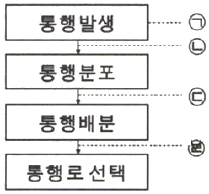
- ㉠
- ㉡
- ㉢
- ㉣
(정답률: 64%)
16. 사람통행에 의한 주차 수요 추정법 중 P요소법에서 직접적으로 사용하는 요소가 아닌 것은?
- 지역주차 조정계수
- 계절주차 집중계수
- 첨두시 주차집중률
- 건물 연면적
(정답률: 69%)
17. 사람통행 실태조사의 결과를 검증ㆍ보완하고 교통량 추세 분석, 통행배정을 위해 실시하는 것으로, 한 지역을 가로지르는 가상적인 선과 교차하는 모든 도로 상에서의 통행량을 측정하는 것은?
- 폐쇄선조사
- 기ㆍ종접조사
- 면접조사
- 스크린라인조사
(정답률: 73%)
18. 교통체계관리(TSM)기법 중 수요와 공급을 동시에 감소시키는 기법은?
- 승용차 공동이용
- 기존 차로 활용 버스전용차로제
- 노상주차 제한
- Park & Ride
(정답률: 62%)
19. 지능형교통체계의 정보수집시설에 대한 설명이 틀린 것은?
- 루프검지기는 교차로의 정지선 앞이나 링크구간의 상류부에 설치할 수 있다.
- 영상검지기는 영상검지카메라가 최적의 시야가 확보되도록 설치하는 것이 중요하다.
- 동영상 수집 검지기는 반복 정체 또는 돌발 상황에 따른 상시 감시가 필요한 지점에 설치한다.
- 자동차 번호판 자동 인식 장치는 차로 변경이 잦은 지점, 교통 상황의 변화가 자주 발생하는 현상을 체크하기 어려운 지점에 설치한다.
(정답률: 75%)
20. 교통 수요 추정 시 사용하는 원단위법에 관한 설명으로 가장 거리가 먼 것은?
- 계산이 용이하다.
- 해당 지역의 토지이용특성을 고려하여 장래 통행량을 추정한다.
- 교통체계의 최적화 문제에 이용하기 쉽다.
- 현재와 장래 사이에는 독립변수의 구조적인 관계가 변하지 않는다는 가정을 전제로 한다.
(정답률: 42%)
2과목: 교통공학
21. 이동측정법(Moving Vehicle Method)에 대한 설명이 틀린 것은?
- 양방향 도로에서만 적용이 가능하다.
- 교통량과 통행시간 자료를 동시에 수집할 수 있다.
- 교통량이 아주 많거나 또는 아주 적은 다차로 도로 구간에 적용하기 적합하다.
- 조사구간은 물리적ㆍ교통적 여건에서 유사한 연속성을 지니도록 해야 한다.
(정답률: 68%)
22. 20/20의 시력을 가진 운전자가 80m의 거리에서 글자 크기가 15cm인 교통표지판을 읽을 수 있다면, 20/50의 시력을 가진 운전자가 글자 크기가 동일한 표지판을 읽기 위해 필요한 거리는?
- 32m
- 36m
- 40m
- 48m
(정답률: 64%)
23. 고속도로 기본구간의 이상적인 조건 기준이 틀린 것은?
- 평지
- 차로폭 3.5m 이상
- 측방여유폭 1m 이상
- 승용차만으로 구성된 교통류
(정답률: 71%)
24. 어느 도로 구간의 자유속도가 100km/h, 혼잡밀도는 150대/km, 밀도가 60대/km일 때, 속도는 얼마인가? (단, Greenshields 모형에 따른다.)
- 40km/h
- 49km/h
- 60km/h
- 90km/h
(정답률: 48%)
25. 교통제어(통제)설비의 요구조건으로 틀린 것은?
- 요구(필요성)에 부응해야 한다.
- 운전자의 주의를 끌어서는 안 된다.
- 간단하고 명료하게 의미를 전달할 수 있어야 한다.
- 적절한 반응을 위해 충분한 시간이 주어질 수 있는 곳에 설치되어야 한다.
(정답률: 74%)
26. 신호연동을 산정하기 위한 시공도이 작성에서 반드시 필요한 요소가 아닌 것은?
- 신호시간
- 차량길이
- 차량속도
- 교차로간격
(정답률: 66%)
27. 운영방식에 따른 비신호교차로의 종류에 해당하지 않는 것은?
- 무통제 교차로
- 양방향정지 교차로
- 일방향정지 교차로
- 로터리식 교차로
(정답률: 46%)
28. 병목흐름(Bottleneck flow)인 상태에서의 도착 차량수와 출발차량수를 누적하여 나타낸 아래의 시간-차량 누적 곡선에 대한 설명이 틀린 것은?
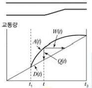
- 차량의 열은 t1에서 시작하여 t3까지 없어지지 않는다.
- t1과 t3사이의 어떤 시간(t)에서의 열의 길이(Q(t))는 A(t) - D(t)이다.
- t시간에 도착하는 차량은 W(t) 이후에 출발한다.
- 총열의 지체는 t3-t1이다.
(정답률: 68%)
29. 한 차로에서 차간시간은 0이 될 수 없으며, 차두시간은 최소한의 안전 차두시간보다 작을 수 가 없다는 논리로 차두시간의 분포모형을 산정하는데 적합한 확률모형은?
- 이항분포
- 포아송분포
- 음지수분포
- 편의된 음지수분포
(정답률: 49%)
30. 아래 그림과 같이 교통류에 Bottle neck이 형성될 경우 그에 의한 충격파의 속도는? (단, K:밀도, U:속도, q:교통량)
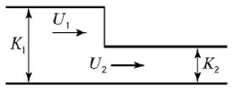
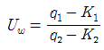
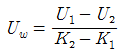
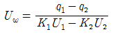
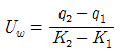
(정답률: 58%)
31. 어떤 기준 시간으로부터 녹생등화가 켜질 때까지의 시간차를 초 또는 주기의 %로 나타낸 값은?
- 현시
- 주기
- 옵셋
- 신호간격
(정답률: 61%)
32. 도시 내 간석도로의 피크 시 조사한 교통량이 다음과 같을 때 피크시간계수(PHF)는?
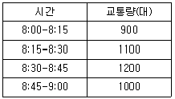
- 0.75
- 0.775
- 0.825
- 0.875
(정답률: 66%)
33. 한 운전자가 70km/h의 속도로 주행 중에 장애물을 발견하여 급제동할 때 필요한 최소 정지시거는? (단, 도로는 2%의 하향경사로, 노면 마찰계수는 0.5, 운전자 반응시간은 2.5초이다.)
- 약 88m
- 약 76m
- 약 58m
- 약 48m
(정답률: 55%)
34. 임의도착 교통류에서 도착교통량이 시간당 1200대일 때, 1분 동안 20대가 도착할 확률은?
- 약 0.030
- 약 0.⑤9
- 약 0.089
- 약 0.118
(정답률: 47%)
35. 고속도로 특정 경사 구간에서 중차량의 승용차 환산계수를 결정하는데 필요한 요소가 아닌 것은?
- 종단 경사
- 중차량 구성비
- 중차량의 길이
- 종단경사의 길이
(정답률: 60%)
36. 가변차로제의 장점이 아닌 것은?
- 설치 및 운영이 매우 간단하다.
- 기존 도로를 효율적으로 활용한다.
- 일반통행제와 비교할 때 우회도로를 필요로 하지 않는다.
- 필요한 시간대에 필요한 방향으로 용량을 추가로 배정할 수 있다.
(정답률: 70%)
37. 포화교통류율(s, pcphgpl)과 포화차두시간(h, 초)의 관계로 옳은 것은?
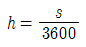
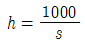
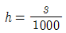
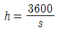
(정답률: 66%)
38. 고속도로 엇갈림구간(Weaving Area)의 교통류 특성에 영향을 미치는 도로 기하구조 요소에 해당하지 않는 것은?
- 엇갈림구간의 길이
- 엇갈림구간의 형태
- 엇갈림구간의 폭(차로수)
- 엇갈림구간의 설계속도
(정답률: 54%)
39. 도로의 한 지점을 통과하는 차량 3대의 속도가 아래와 같을 때, 공간평균속도는 약 얼마인가?
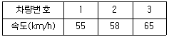
- 63km/h
- 59km/h
- 54km/h
- 32km/h
(정답률: 63%)
40. 단일 서비스기관의 대가 행렬모형에서 평균 도착율이 λ, 평균서비스율이 μ일 때, 시스템 내의 평균 체류시간을 나타내는 식은?
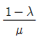
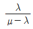
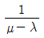
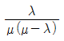
(정답률: 50%)
3과목: 교통시설
41. 도로의 포장 방법에 따른 특성을 비교한 내용이 틀린 것은?
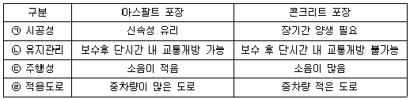
- ㉠
- ㉡
- ㉢
- ㉣
(정답률: 60%)
42. 버스정류장의 제원 중 고속국도에 설치하는 버스정류장 감속차로부의 감속차로 길이 기준은? (단, 설계속도가 100km/h인 경우)
- 75m 이상
- 120m 이상
- 140m 이상
- 160m 이상
(정답률: 24%)
43. 지하차도에 설치하는 길어깨의 폭은 설계속도가 시속 100km 이상인 경우 최소 얼마 이상으로 하여야 하는가?
- 0.5m
- 1m
- 1.5m
- 3m
(정답률: 28%)
44. 어느 건물의 주차용량이 60대, 주차이용대수가 일일 300대이고, 평균주차시간이 3시간이다. 주차장이 하루 20시간 개방된다고 한다면 이 주차장의 주차효율은?
- 0.65
- 0.75
- 0.85
- 0.95
(정답률: 44%)
45. 중앙분리대의 설치에 대한 설명으로 틀린 것은?
- 중앙분리대의 분리대 내에는 노상시설물을 설치할 수 없다.
- 중앙분리대는 도로 중심선 쪽의 교통마찰을 감소시켜 용량을 증대시키는 효과가 있다.
- 설계속도가 시속 90km인 도로에서는 중앙분리대에 폭 0.5m 이상의 측대를 설치하여야 한다.
- 차로를 왕복 방향별로 분리하기 위하여 중앙선을 두 줄로 표시하는 경우 각 중앙선의 중심사이의 간격은 0.5m 이상으로 한다.
(정답률: 42%)
46. 평면 교차로에서 우회전 도류로의 폭을 결정하는 요소로 가장 거리가 먼 것은?
- 설계기준자동차
- 평면곡선 반지름
- 도류로의 차로수
- 도류로의 회전각
(정답률: 48%)
47. 설계시간계수(K30)의 일반적인 특성에 대한 설명이 틀린 것은?
- K30이 클수록 교통 수요의 변화가 크다.
- 도시지역 도로가 지방지역 도로보다 K30이 크다.
- K30은 설계시간 교통량을 계산할 때 사용한다.
- 연평균 일교통량이 증가할수록 해당 도로의 K30은 감소한다.
(정답률: 59%)
48. 종단경사가 있는 구간에서 오르막차로를 설치하지 아니할 수 있는 설계속도 기준은?
- 시속 80km 이하
- 시속 60km 이하
- 시속 40km 이하
- 시속 20km 이하
(정답률: 61%)
49. 도로의 구조ㆍ시설 기준에 관한 규칙상 보도의 유효폭은 최소 얼마 이상으로 하여야 하는가? (단, 지방지역의 도로와 도시지역의 국지도로가 지형 상 불가능하거나 기존 도로의 증설ㆍ개설 시 불가피하다고 인정되는 경우는 제외)
- 2m
- 2.25m
- 2.5m
- 3m
(정답률: 63%)
50. 도로의 차로 폭을 결정하는데 고려해야 할 사항으로 가장 거리가 먼 것은?
- 교차로와 회전차로 수
- 교통량 및 대형차 혼입율
- 서비스 수준
- 평균 주행속도(설계속도)
(정답률: 33%)
51. 앞지르기시거를 계산하기 위한 가정이 틀린 것은?
- 앞지르기 당하는 자동차는 일정한 속도로 주행한다.
- 앞지르기 하는 자동차는 앞지르기를 하기 전까지는 앞지르기 당하는 자동차보다 빠른 속도로 주행한다.
- 앞지르기가 가능하다는 것을 인지한다.
- 반대편 차로의 마주 오는 자동차는 설계속도로 주행하는 것으로 한다.
(정답률: 70%)
52. 인터체인지의 입체교차 형식 중 불완전 입체교차에 해당하는 것은?
- 직결형
- 완전 클로버형
- 트럼펫형
- 다이아몬드형
(정답률: 69%)
53. 도로의 구조ㆍ시설 기준에 관한 규칙에 따른 설계기준자동차에 해당하지 않는 것은?
- 승용자동차
- 중형자동차
- 대형자동차
- 세미트레일러
(정답률: 63%)
54. 도로의 설계속도에 따른 차도의 최소 평면곡선 반지름 기준이 옳은 것은? (단, 편경사가 6%인 경우이다.)
- 설계속도 120km/h, 최소 평면곡선 반지름 640m
- 설계속도 100km/h, 최소 평면곡선 반지름 460m
- 설계속도 80km/h, 최소 평면곡선 반지름 380m
- 설계속도 60km/h, 최소 평면곡선 반지름 200m
(정답률: 49%)
55. 버스정류장(Bus Bay)의 설치장소 기준에 대한 설명으로 틀린 것은?
- 고속국도 등 주간선도로에 설치한다.
- 버스승하차에 의한 교차로 용량은 버스의 이용 횟수, 승ㆍ하차 인원, 승ㆍ하차 소요시간 등을 고려하여 산정한다.
- 보조간선도로로서, 특히 본선의 교통류가 버스정차로 인하여 혼란이 야기될 우려가 있는 경우 설치한다.
- 버스정류소를 설치했을 때 그 도로의 예상서비스 수준이 설계서비스 수준보다 높은 경우 설치한다.
(정답률: 53%)
56. 용어의 정의가 틀린 것은?
- 편경사란 도로의 진행 방향 중심선의 길이에 대한 높이의 변화 비율을 말한다.
- 길어깨란 도로를 보호하고, 비상시나 유지관리시에 이용하기 위하여 차로에 접속하여 설치하는 도로의 부분을 말한다.
- 회전차로란 자동차가 우회전, 좌회전, 또는 유턴을 할 수 있도록 직진하는 차로와 분리하여 추가로 설치하는 차로를 말한다.
- 연결로란 도로가 입체적으로 교차할 때 교차하는 도로를 서로 연결하거나 높이가 다른 도로를 서로 연결하여 주는 도로를 말한다.
(정답률: 47%)
57. 길어깨 중 측대의 기준으로 거리가 가장 먼 것은?
- 강우 시 노면배수의 집수 역할을 하여 배수 시 노면 패임을 방지 한다.
- 차로를 이탈한 자동차에 대한 안전성을 향상시킨다.
- 주행상 필요한 측방 여유폭의 일부를 확보하여 차로의 효용을 유지한다.
- 차로와의 경계를 노면 표시 등으로 일정 폭 만큼 명확하게 나타내고 운전자의 시선을 유도하여 안전성을 증대시킨다.
(정답률: 39%)
58. 도로의 기능에 따른 구분 중 이동성이 가장 낮은 도로는?
- 국지도로
- 집산도로
- 간선도로
- 고속국도
(정답률: 67%)
59. 지하식 보행시설에 대한 설명이 틀린 것은?
- 범죄의 가능성이 크다.
- 유지ㆍ관리가 어려운 편이다.
- 외부를 볼 수 없어 방향 감각을 잃기 쉽다.
- 횡단보도시설에 비해 건설비가 적게 든다.
(정답률: 71%)
60. 평면교차로에서의 도류화 설계를 위한 기본원칙이 틀린 것은?
- 평면곡선부는 적절한 평면곡선 반지름과 차로폭을 가져야 한다.
- 교통관제시설은 도류화의 일부분이 아니므로 교통섬과 분리하여 별도로 설계하여야 한다.
- 운전자가 한 번에 한 가지 이상의 의사결정을 하지 않도록 해야 한다.
- 자동차의 속도와 경로를 점진적으로 변화시킬 수 있도록 접근로의 단부를 처리해야 한다.
(정답률: 66%)
4과목: 도시계획개론
61. 도시ㆍ군기본계획의 원칙적인 수립권자에 해당하지 않는 자는?
- 군수
- 면장
- 특별시장
- 특별자치도지사
(정답률: 68%)
62. 중앙행정기관이나 지방자치단체 또는 대통령령이 정하는 기관이 작성하는 통계 중 통계청장이 지정ㆍ고시하는 통계로, 인구ㆍ사회ㆍ경제 기타 정책의 수립 및 평가에 널리 활용되는 것은?
- 기준통계
- 일반통계
- 지정통계
- 특수통계
(정답률: 56%)
63. 다음 중 일반적인 도시의 특성과 가장 거리가 먼 것은?
- 1차 산업 종사자수 증가
- 인구 구성의 이질성
- 사회적 익명성 증가
- 높은 인구밀도
(정답률: 66%)
64. 도시ㆍ군관리계획의 내용에 해당하지 않는 것은?
- 도시개발사업이나 정비사업에 관한 계획
- 개발제한구역의 지정 또는 변경에 관한 계획
- 용도지역ㆍ용도지구의 지정 또는 변경에 관한 계획
- 시ㆍ군의 공간구조와 장기적인 발전방향에 관한 계획
(정답률: 55%)
65. 도시공원 및 녹지 등에 관한 법령에 따른 도시공원의 종류에 해당하지 않는 것은?
- 근린공원
- 묘지공원
- 옥외공원
- 어린이공원
(정답률: 56%)
66. 국토의 계획 및 이용에 관한 법령에 따른 용도지구 중 보호지구의 세분에 해당하지 않는 것은?
- 자연보호지구
- 생태계보호지구
- 중요시설물보호지구
- 역사문화환경보호지구
(정답률: 43%)
67. 보행자 전용가로, 공원녹지 등의 보행자 공간을 연속시키는 것으로 주택지에서는 유치원, 학교, 근린시설을 연결시키고 도심에서는 광장, 상점등을 결합시켜 나무가 우거지고 보행위락시설이 정비된 연속된 가로를 무엇이라 하는가?
- 커뮤니티몰
- 쇼핑몰
- 식생통로
- 슈퍼블록
(정답률: 45%)
68. 다음 중, 주거지역의 도로율 기준으로 옳은 것은? (단, 도시ㆍ군계획시설의 결정ㆍ구조 및 설치기준에 관한 규칙에 따르며, 간선도로의 도로율은 고려하지 않는다.)
- 8% 이상 20% 미만
- 10% 이상 20% 미만
- 15% 이상 30% 미만
- 25% 이상 35% 미만
(정답률: 47%)
69. 도시의 구성요소인 토지와 시설에 대한 물리적 계획의 3요소가 모두 옳은 것은?
- 인구, 밀도, 정책
- 교통, 주택, 산업
- 배치, 인구, 활동
- 밀도, 배치, 동선
(정답률: 60%)
70. 현재 인구가 150만명이고, 연평균 인구 증가율이 4%일 때, 등차급수법에 따른 5년 후의 추정인구는?
- 156만명
- 172만명
- 180만명
- 206만명
(정답률: 57%)
71. 대지면적에 대한 건축면적의 비율로, 거주환경의 쾌적성과 안전성 등의 확보를 위한 공지의 조성을 목적으로 하는 토지이용규제수단은?
- 공공율
- 건폐율
- 도로율
- 환지율
(정답률: 72%)
72. 다음과 같은 특징을 갖는 가로망 형태는?
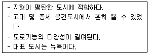
- 방사형
- 쿨데삭형
- 방사환상형
- 격자형
(정답률: 73%)
73. 인구가 처음에는 완만하게 증가하다가 어느 시점을 지나면서 급격히 증가하고 다시 완만하게 증가하며, 성장의 물리적 한계가 있는 도시의 인구 예측에 적용이 가능한 인구예측 모형은?
- 선형모형
- 집단생장모형
- 로지스틱모형
- 비율예측방법
(정답률: 70%)
74. 도시ㆍ군계획시설로서 도로의 배치간격 기준으로 옳은 것은?
- 국지도로간: 500m 내외
- 주간선도로와 주간선도로: 2km 내외
- 주간선도로와 보조간선도로: 1km 내외
- 보조간선도로와 집산도로: 250m 내외
(정답률: 58%)
75. 하워드가 주장한 전원도시의 개념을 바탕으로, 1900년대 초에 언윈과 파커에 의해 런던 교외에 건설된 전원도시는?
- 빅토리아
- 할로우
- 레치워스
- 햄스테트
(정답률: 62%)
76. 다음 중 토지이용 분포에 따른 도시 내부의 공간구조를 설명하는 이론에 해당하지 않는 것은?
- 동심원이론
- 선형이론
- 중심지이론
- 다핵심이론
(정답률: 58%)
77. 도시의 외연적 확산 현상의 원인과 가장 거리가 먼 것은?
- 주택 수요 증가
- 도심 개발의 한계
- 도시의 지가 상승
- 토지에 입체적 고밀도 이용 활동화
(정답률: 54%)
78. 도시ㆍ군기본계획에 대한 설명으로 옳은 것은?
- 도시개발사업의 시행을 위한 집행계획이다.
- 장기적ㆍ종합적 계획이며 지침제시적 계획이다.
- 개별 시민의 건축 행위에 대한 법적 구속력을 규정한다.
- 도시ㆍ군계획과 도시ㆍ군관리계획의 상위 계획에 해당한다.
(정답률: 39%)
79. 도시의 경제ㆍ사회ㆍ문화적인 특성을 살려 개성 있고 지속가능한 발전을 촉진하기 위하여 경관, 생태, 정보통신, 과학, 문화, 관광 등의 분야별로 국토교통부장관이 지정할 수 있는 도시계획 관련 사항은?
- 관광단지 지정
- 시범도시 지정
- 지구단위계획 지정
- 디지털시티 지정
(정답률: 58%)
80. 도시조사분석방법론에 대한 설명으로 옳지 않은 것은?
- 추정된 회귀분석모형은 미래예측에 활용할 수 있다.
- 회귀분석이란 독립변수와 종속변수 사이의 선형 및 비선형관계를 구하는 방법이다.
- 상관분석이란 상관계수를 이용하여 두 변수의 관계가 얼마나 밀접한가를 측정하는 방법이다.
- 다중선형회귀분석이란 하나의 종속변수와 하나의 독립변수 사잉의 선형 및 비선형 관계를 구하는 방법이다.
(정답률: 59%)
5과목: 교통관계법규
81. 국가통합교통체계효율화법의 정의에 따른 복합환승센터의 구분에 해당하지 않는 것은?
- 국가기간복합환승센터
- 지능형복합환승센터
- 광역복합환승센터
- 일반복합환승센터
(정답률: 46%)
82. 국가통합교통체계효율화법상 천재지변으로 인해 국가교통관리에 중대한 차질이 발생한 경우, 이에 효과적으로 대응하기 위하여 비상 시 교통대책을 수립할 수 있는 자는?
- 경찰서장
- 소방청장
- 행정안전부장관
- 국토교통부장관
(정답률: 71%)
83. 대도시권 광역교통 관리에 관한 특별법령의 정의에 따른 ‘대도시권’의 권역 구분에 해당하지 않는 것은?
- 대구권
- 대전권
- 수도권
- 전주권
(정답률: 67%)
84. 주차장법령상 “주차전용건축물”이란 건축물의 연면적 중 주차장으로 사용되는 부분의 비율 기준이 얼마 이상인 것을 말하는가? (단, 기타의 경우는 고려하지 않는다.)
- 80% 이상
- 85% 이상
- 90% 이상
- 95% 이상
(정답률: 64%)
85. 대중교통의 육성 및 이용촉진에 관한 법률의 정의에 따른 ‘대중교통시설’에 해당하지 않는 것은? (단, 그 밖에 대통령령이 정하는 시설 또는 공작물로서 대중교통수단의 운행과 관련된 시설 또는 공작물을 고려하지 않는다.)
- 버스 전용차로
- 택시 정류장
- 「도시철도법」에 따른 도시철도시설
- 「도시교통정비촉진법」에 따른 환승시설
(정답률: 55%)
86. 도로교통법령상 모든 차의 운전자에 대하여, 소방용수시설 또는 비상소화장치가 설치된 곳으로부터 최대 몇 미터 이내의 곳에는 차의 정차 및 주차가 금지되는가?
- 3m 이내
- 5m 이내
- 7m 이내
- 10m 이내
(정답률: 62%)
87. 도로법의 정의에 따라 ‘도로의 부속물’에 해당하지 않는 것은? (단, 그 밖에 도로의 기능 유지 등을 위한 시설로서 대통령령으로 정하는 시설의 경우는 고려하지 않는다.)
- 도로표지
- 중앙분리대
- 버스정류시설
- 도로용 엘리베이터
(정답률: 70%)
88. 도로법령상 접도구역의 지정 등에 관한 기준과 관련하여, ( )에 들어갈 내용이 모두 옳은 것은?
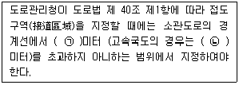
- ㉠: 5, ㉡: 30
- ㉠: 5, ㉡: 20
- ㉠: 10, ㉡: 30
- ㉠: 10, ㉡: 20
(정답률: 40%)
89. 도로교통법의 정의에 따라 보행자가 도로를 횡단할 수 있도록 안전표지로 표시한 도로의 부분을 무엇이라 하는가?
- 교차로
- 횡단보도
- 안전지대
- 길가장자리구역
(정답률: 63%)
90. 국가통합교통체계효율화법령상 복합환승센터의 지정과 관련하여, 복합환승센터 개발계획 변경 시 관할 시ㆍ도지사의 의견을 듣고 관계 증앙행정기관의 장과 협의한 후 국각교통위원회의 심의를 거쳐야 하는 기준 사항이 아닌 것은?
- 복합환승센터의 사업시행자를 변경하려는 경우
- 복합환승센터 지정 면적의 100분의 10이상을 변경하려는 경우
- 복합환승센터 건축연면적의 100분의 30이상을 변경하려는 경우
- 복합환승센터의 연계교통시설을 위한 계획 및 환승시설의 위치ㆍ규모 등을 변경하려는 경우
(정답률: 41%)
91. 주차장법령상 노외주차장의 구조ㆍ설비기준에서 ( )에 들어갈 내용이 옳은 것은?
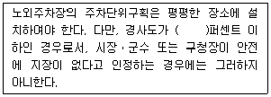
- 3
- 5
- 7
- 10
(정답률: 23%)
92. 도로법상 도로관리청은 몇 년마다 해당 소관도로에 대하여 도로건설ㆍ관리계획을 수립하여야 하는가? (단, 국가지원지방도는 고려하지 않는다.)
- 5년
- 10년
- 15년
- 20년
(정답률: 54%)
93. 교통안전법령의 정의에 따른 ‘지정행정기관’에 해당하지 않는 것은? (단, 국무총리가 특히 필요하다고 인정하여 지정하는 중앙 행정기관은 고려하지 않는다.)
- 국방부
- 교육부
- 법무부
- 기획재정부
(정답률: 57%)
94. 주차장법상 원칙적으로 노상주차장을 설치하는 자는? (단, 기타의 경우는 고려하지 않는다.)
- 시장ㆍ군수
- 국토교통부장관
- 행정안전부장관
- 경찰청장
(정답률: 65%)
95. 교통시설의 정비를 촉진하고 교통수단과 교통체계를 효율적으로 운영ㆍ관리하여 도시교통의 원활한 소통과 교통편의 증진에 이바지함을 목적으로 제정된 법령은?
- 도로법
- 도로교통법
- 교통안전법
- 도시교통정비촉진법
(정답률: 48%)
96. 도시교통정비촉진법령상 교통유발부담금의 부과는 해당 시설물의 각 층 바닥면적을 합한 면적이 최소 얼마 이상인 시설물을 대상으로 하는가? (단, 부과대상 시설물이 주택법에 따른 주택단지에 위치한 시설물로서 도로변에 위치하지 아니한 시설물인 경우는 고려하지 않는다.)
- 1000m2
- 2000m2
- 3000m2
- 4000m2
(정답률: 64%)
97. 도로교통법령에 따른 차로의 설치 기준이 틀린 것은?
- 차로는 횡단보도ㆍ교차로에는 설치할 수 없다.
- 설치하는 차로의 너비는 3m 이상으로 하며 좌회전용차로의 설치 등 부득이하다고 인정되는 때에는 275cm이상으로 할 수 있다.
- 중앙선 표시는 노란색으로 한다.
- 보도와 차도의 구분이 없는 도로에 차로를 설치하는 때에는 그 도로의 양쪽에 길가장자리구역을 설치할 필요가 없다.
(정답률: 56%)
98. 대도시권 광역교통 관리에 관한 특별법령상 광역교통 개선대책을 수립하여야 하는 대규모 개발사업의 수용인구 또는 수용인원 기준이 옳은 것은?
- 1만명 이상
- 3만명 이상
- 5만명 이상
- 10만명 이상
(정답률: 24%)
99. 도시교통정비촉진법상 국토교통부장관이 도시교통정비지역으로 지정ㆍ고시할 수 있는 도시 인구 기준은? (단, 도농복합형태의 시는 고려하지 않는다.)
- 5만명 이상
- 10만명 이상
- 15만명 이상
- 20만명 이상
(정답률: 66%)
100. 교통안전법령상 교통안전관리자 자격의 종류에 해당하지 않는 것은?
- 항공교통안전관리자
- 궤도교통안전관리자
- 항만교통안전관리자
- 삭도교통안전관리자
(정답률: 55%)
6과목: 교통안전
101. 물기가 있는 도로 주행시 노면과 타이어 사잉에 얇은 수막이 생겨 주행 시 브레이크 기능을 상실하게 되는 것을 무엇이라 하는가?
- 페드 현상
- 시미 현상
- 스탠딩 웨이브 현상
- 하이드로 플래닝 현상
(정답률: 66%)
102. 도로안전진단(Road Safety Audit)에 대한 설명으로 틀린 것은?
- 도로설계자 뿐만 아니라 도로 이용자의 입장 등 다양한 측면에서 도로안전을 점검하고 이에 대한 결과를 도로 현장에 반영하여 개선하는 절차이다.
- 도로안전진단의 주체는 도로의 계획, 설계 및 운영과 관련이 없는 독립적인 사람이어야 한다.
- 도로안전진단제도는 미국에서 처음 시작되었다.
- 계획, 시공, 운영 단계까지 모든 단계에 적용될 수 있다.
(정답률: 62%)
103. 교통사고의 유발요인을 인적요인, 차량요인, 도로물리요인, 환경요인으로 구분할 때 차량요인에 해당하는 것은?
- 음주 운전
- 신호등 고장
- 조향 장치 고장
- 운전 중 핸드폰 통화
(정답률: 70%)
104. 30km의 도로구간에서 1년 동안 60건의 사고가 발생하였다. 조사 결과 1일 평균 교통량(ADT)이 6000대일 경우 차량 1억대ㆍkm당 사고율은? (단, 1년은 365일이다.)
- 91.3건
- 85.2건
- 81.4건
- 75.3건
(정답률: 52%)
1⑤. 중앙분리대를 설치하는 경우 가장 효율적으로 예방될 수 있는 사고 유형은?
- 추락사고
- 접촉사고
- 추돌사고
- 정면충돌사고
(정답률: 68%)
106. 주행하는 차량의 운동량을 차량의 경로에 위치한 소모용 재료의 질량으로 전이시키는 충격완화시설은?
- 관성 방호책
- 하이드라이 셀 샌드위치
- 하이드로 셀 샌드위치
- 압축유형 방호책
(정답률: 51%)
107. 사고경험에 기초한 위험지점 선정 방법 중 아래 설명에 해당하는 것은?
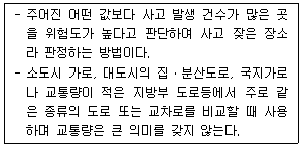
- 사고율법
- 사고건수법
- 사고건수-사고율법
- 사고율-통계적 방법
(정답률: 56%)
108. 주행 중이던 차량이 급정거하여 스키드마크가 20m가 나타난 다음 30m를 지나서 다시 25m가 계속되었다면 차량의 제동 전 초기 속도는? (단, 타이어와 노면의 마찰계수는 0.8이고, 경사는 없다.)
- 95.6km/h
- 99.7km/h
- 1⑤.6km/h
- 107.7km/h
(정답률: 55%)
109. 어느 차량이 40m거리를 미끄러져 주차한 차량과 충돌할였으며 충돌 후 두 차량이 함께 15m를 미끄러져 정지하였다. 두 차량의 무게가 동일할 때 주행차량의 초기 속도는? (단, 마찰계수는 0.5로 한다.)
- 101.2km/h
- 1⑤.4km/h
- 112.7km/h
- 117.3km/h
(정답률: 60%)
110. 교통안전을 위한 사고유발인자 개선조치를 도로 사용자ㆍ차량ㆍ도로 측면으로 구분하고 이를 다시 충돌 전ㆍ충돌 중ㆍ충돌 후 개선조치로 제시한 Haddon Matrix에 대한 설명으로 틀린 것은?
- 차량 측면의 충돌 후 관련 개선조치로 충격보호장치가 해당된다.
- 도로사용자 측면의 충돌 전 관련 개선조치로 운전자 교육이 해당된다.
- 도로사용자 측면의 충돌 후 관련 개선조치로 비상의료서비스가 해당된다.
- 도로 측면의 충돌 중 관련 개선조치로 부러지는 지주 설치 등 노변안전조치가 해당된다.
(정답률: 49%)
111. 어느 사고다발지점에 대해 개선사업을 실시한 경우 운전자가 변화된 도로환경에 따라 과거보다 주의력을 감소시킴으로써 당초 의도한 대선대책의 효과를 상쇄시키는 경향은?
- 주관적위험(Subjective Risk)
- 위험보정(Risk Compensation)
- 사고이동(Accident Migration)
- 평균으로서의 회귀효과(Regression to Mean Effect)
(정답률: 48%)
112. 교통사고 예방과 피해 감소를 위한 각종 대책으로 대별되는 3E에 해당하지 않는 분야는?
- 교육(Education)
- 공학(Engineering)
- 규제(Enforcement)
- 환경(Environment)
(정답률: 70%)
113. 정지하고 있던 차량이 3m/sec2으로 가속하여 72km/h에 도달하기까지 소요되는 시간은?
- 약 5.8초
- 약 6.7초
- 약 7.6초
- 약 8.5초
(정답률: 63%)
114. 위험지점 선정방법 중 율-품질관리법에 대한 설명으로 틀린 것은? (단, Rc:한계사고율, Ra:도로 등급별 평균사고율, K:상수, M:해당 지점이나 구간의 분석기간동안의 차량 노출)
- 적용상 실질적으로 참조지점을 찾기 어렵거나 참조지점이 아예 존재하지 않을 수 있다.
- 일반적으로 사고발생은 포아송 분포를 따른다는 가정에 기초한다.
- 산출공식은
 이다.
이다. - 한계사고율은 분석될 지점 도로의 등급 및 평균사고율과 차량노출의 함수로서 통계적으로 결정된다.
(정답률: 52%)
115. 비신호교차로에서 제한된 시거로 인한 지각충돌사고의 개선 방안으로 가장 거리가 먼 것은?
- 시야장애물의 제거
- 정지표지 설치
- 교차로의 도류화
- 노면 재포장
(정답률: 69%)
116. 아래 그림과 같이 평탄한 길을 달리던 자동차가 10m 높이 아래로 추락하였다. 이 때 추락한 수평거리가 30m 이었다면 추락 직전 수평방향의 속도는 약 얼마인가?
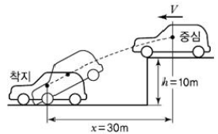
- 약 15km/h
- 약 30km/h
- 약 54km/h
- 약 76km/h
(정답률: 50%)
117. 교통사고 위험지점의 개선으로 얻게 되는 2차 편익과 가장 거리가 먼 것은?
- 차량혼잡의 감소
- 개선된 차도 및 노변의 기하구조
- 운행속도의 적정화
- 교통량 감소
(정답률: 67%)
118. 운전자들에게 필요한 정보를 올바른 방법으로 제공하여 운전자들이 충돌을 피할 수 있게 해야 한다는 개념의 ‘Positive Guidance’의 기대심리에 대한 설명으로 옳지 않은 것은?
- 어떠한 상황에서든 과거로 회귀한다는 기대
- 차가 계속 일정한 속도로 움직일 것이라는 계속성의 기대
- 일시적 또는 간헐적으로 어떤 사건이 일어날 것이라는 기대
- 과거에 일어나지 않은 일은 계속 일어나지 않을 것이라는 기대
(정답률: 55%)
119. 교통사고를 유발하는 운전자 요인 중 경험ㆍ실습적 요인과 가장 거리가 먼 것은?
- 음주 장애
- 운전 미숙
- 주행구간에 대한 비친숙성
- 주행구간에 대한 과도한 습관성
(정답률: 68%)
120. 교통마찰(traffic conflict)조사의 목적으로 가장 거리가 먼 것은?
- 전후조사를 통한 개선 사업의 효과 분석
- 교통사고 다발지점의 개선 방향 연구
- 도로 문제 지점의 기하설계요소 평가
- 교통량 관리 및 조절 시스템 마련을 위한 방안 연구
(정답률: 45%)